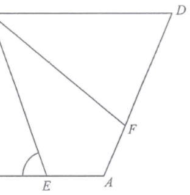

In the figure, $ABCD$ is a rhombus. $E$ and $F$ are points lying on $AB$ and $AD$
respectively such that $AE = AF$ and $\angle ECF = 42^\circ$.
If $\angle BAD = 110^\circ$, then $\angle BEC =$
A. $70^\circ$B. $76^\circ$ C. $80^\circ$D. $84^\circ$

Figure (original exam diagram)
Step 1 · Use the properties of the rhombus
In a rhombus $AB = BC = CD = DA$ and the diagonal $AC$ is the axis of symmetry.
Hence $AC$ bisects both $\angle BAD$ and $\angle BCD$, so
Also $AC = AC$ (common side) and $AE = AF$ (given).
Property of a Rhombus\(\text{diagonal }AC\ \text{bisects}\ \angle BAD\ \text{and}\ \angle BCD\)\(AC\) is the axis of symmetry, so \(\angle CAE=\angle CAF=\dfrac{110^\circ}{2}=55^\circ\).
Corresponding angles are equal, therefore
$$\angle ACE=\angle ACF=\tfrac{1}{2}\angle ECF=\tfrac{1}{2}\times42^\circ=21^\circ.$$
HINT — the two coloured triangles $ACE$ and $ACF$ are mirror images in the diagonal $AC$.
SAS Congruence Test\(AB=DE,\ \angle A=\angle D,\ AC=DF\ \Rightarrow\ \triangle ABC\cong\triangle DEF\)\(AC\) common, \(AE=AF\) and the \(55^\circ\) included angles make \(\triangle ACE\cong\triangle ACF\), so \(\angle ACE=21^\circ\).
Step 3 · Exterior angle of $\triangle ACE$
In $\triangle ACE$, the side $AE$ is produced to $B$, so $\angle BEC$ is an
exterior angle of the triangle. Hence
$$\angle BEC=\angle ACE+\angle CAE \quad(\text{ext. }\angle\text{ of }\triangle)$$
The exterior angle equals the sum of the two interior opposite angles.
Exterior Angle of a Triangle\(\angle BEC=\angle ACE+\angle CAE\)\(AE\) produced to \(B\) makes \(\angle BEC\) an exterior angle of \(\triangle ACE\), so it equals \(21^\circ+55^\circ\).
Quick check: $\angle AEC = 180^\circ-76^\circ=104^\circ$, so in $\triangle ACE$,
$104^\circ+21^\circ+55^\circ=180^\circ$ ✓
PRACTICESimilar question — try it yourself
Question. In the figure, \(ABCD\) is a rhombus. \(E\) and \(F\) are points lying on \(AB\) and \(AD\) respectively such that \(AE=AF\) and \(\angle ECF=50^\circ\). If \(\angle BAD=130^\circ\), then \(\angle BEC=\)
Show the worked solution
Step 1. \(AC\) bisects \(\angle BAD\), so \(\angle CAE=\angle CAF=\dfrac{130^\circ}{2}=65^\circ\).
Step 2. \(AC\) common, \(AE=AF\) and equal \(65^\circ\) angles give \(\triangle ACE\cong\triangle ACF\) (SAS).